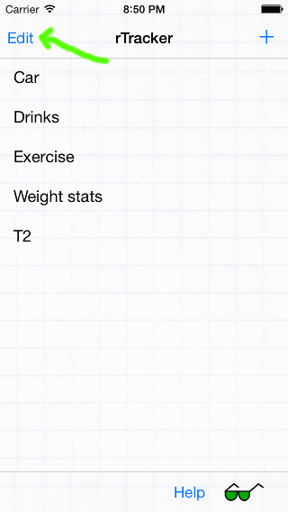
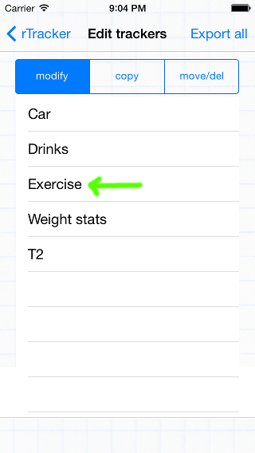
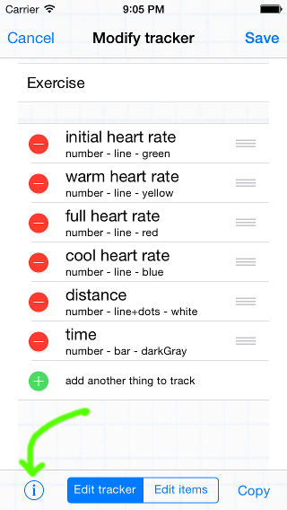
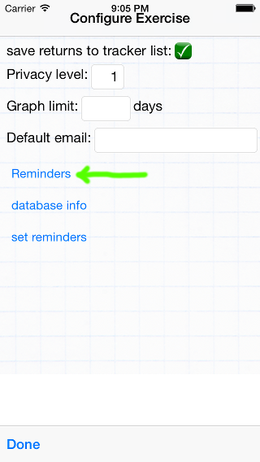
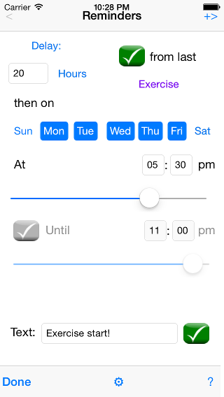
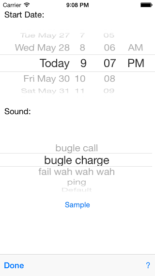
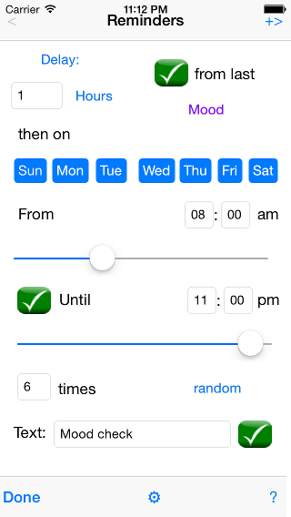
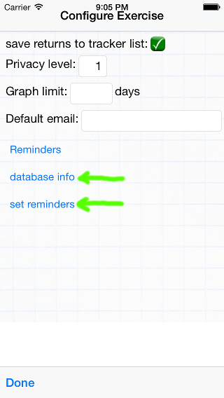
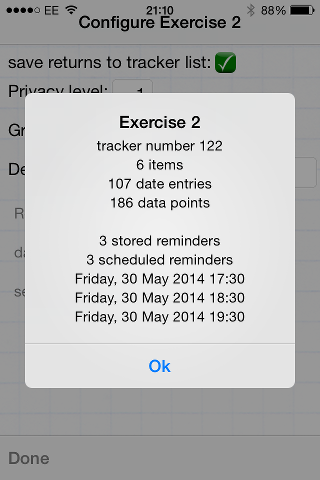

| Tap the 'Edit' button
to access the tracker configuration controls, including reminders. Select the tracker to add a reminder for. |
  |
| Tap the 'i' button,
then 'Reminders' on the next screen. |

 |
| This is a weekday
exercise reminder that will trigger at 5:30 pm, unless data has
already been saved for the Exercise tracker today. All the
colored labels (blue and magenta) are options, which are changed by
tapping. The first section has settings to 'Delay 20 hours from the last save of the Exercise tracker'. This ensures that the reminder will not bother you if you already exercised this morning. Delays may be specified as minutes, hours, days, weeks or months, and they may be from a specific date, or from the last save of the tracker or any specific field within it. The 'Delay:' button can alternately present a list of days of the month (e.g. 1,15,30). After the delay criteria is satisfied (wait at least 20 hours from the last save of the Exercise tracker), the next section specifies when the reminder will trigger. In this case, Monday through Friday at 5:30 pm. The final section allows setting the text to be displayed in the reminder notification ('Exercise start!'), and the checkbox enables or disables the reminder as desired. Additional reminders can be created and accessed with the '<' and '+>' buttons at the top of the form. iOS allows up to 64 active reminders for each app. A reminder is deleted by setting something that can't trigger (for example, turning off all the weekday buttons) and leaving the form. |
 |
| The 'gear' icon in the
main reminder screen enables setting the 'specific start date' above
if the reminder is not triggered from the last tracker save, as well
as optional sounds for the reminder. Special thanks to freeSFX for providing the sound files! |
 |
|
This reminder is configured for a 'mood' or 'self' tracker, and
will activate up to six times throughout the day. The
reminders will trigger no less than 1 hour apart due to the delay
criteria, and otherwise will occur randomly (but spread roughly
evenly between 8:00 am and 11:00 pm). |
 |
| Reminders are set
(scheduled) when the tracker configuration is saved, when tracker
data is saved, and when a tracker is visited after reminders have
been shown. To inspect scheduled reminders without leaving this screen, click the 'set reminders' button to schedule them, followed by the 'database info' button to inspect them. |
  |